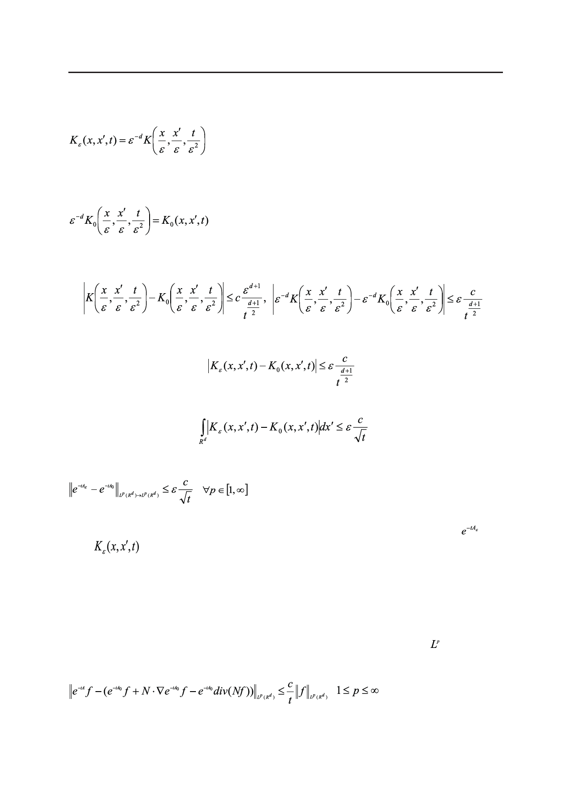

С.Е. Пастухова, О.А. Евсеева
следовательно,
.
(17)
Непосредственно из формулы (8) видно, что
.
(18)
Поэтому из оценки (7) выводим
,
откуда в силу (17) и (18),
.
Аналогично из (9) вытекает интегральная оценка
,
из которой по лемме Шура уже можно вывести операторную оценку погрешности усреднения
(19)
с единой константой для всех p.
Справедливы также аналоги оценок (15) и (14) для близости экспоненты и еe
ядра
к соответствующим аппроксимациям.
Выводы
При дополнительном предположении о липшицевости исходной матрицы диффузии
a(x) установлены:
(i) интегральная оценка (14) для разности фундаментального решения K(x, y, t) ис-
ходной задачи (1) и его первого приближения K1(x, y, t), заданного в (12);
(ii) оценка разности решения задачи (1) и его первого приближения в – нормах по
сечениям t=const, а именно,
,
,
c единой константой для всех p.
Российский технологический журнал 2017 Том 5 № 5
67